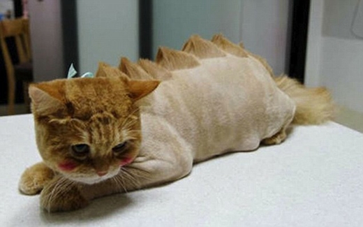

Hiện nay, không chỉ là cắt lông, vệ sinh lông chó mèo thông thường mà người nuôi còn muốn cắt tỉa lông để tạo ra những kiểu lông xinh xắn, độc lạ chó bé cưng của họ. Chính vì thế, Enimal cũng luôn luôn cập nhật những xu hướng làm đẹp cho thú cưng mới nhất trên thế giới để đáp ứng nhu cầu đó của các chủ nuôi.
Quy trình cắt tỉa lông chó mèo để tạo kiểu sẽ phải trải qua các bước sau:

1. Kiểm tra da và lông chó mèo nhằm xác định tình trạng da và lông của chúng.
2. Dựa vào mật độ, chất lông và độ dài lông của bé chó, mèo để tư vấn các mẫu, kiểu cắt lông phù hợp.
3. Sau khi chủ nuôi chọn được kiểu lông muốn cắt tỉa cho thú cưng, chuyên viên của chúng tôi sẽ dùng kéo và tông đơ cắt lông chuyên nghiệp để cắt tỉa lông chó.
4 .Sấy lông nhằm loại bỏ lông thừa dính trên thân bé thú cưng.
5. Chải lông cho bé thú cưng.
6. Xịt nước hoa cao cấp chuyên dụng để lưu lại hương thơm và dưỡng lông cho chó mèo.